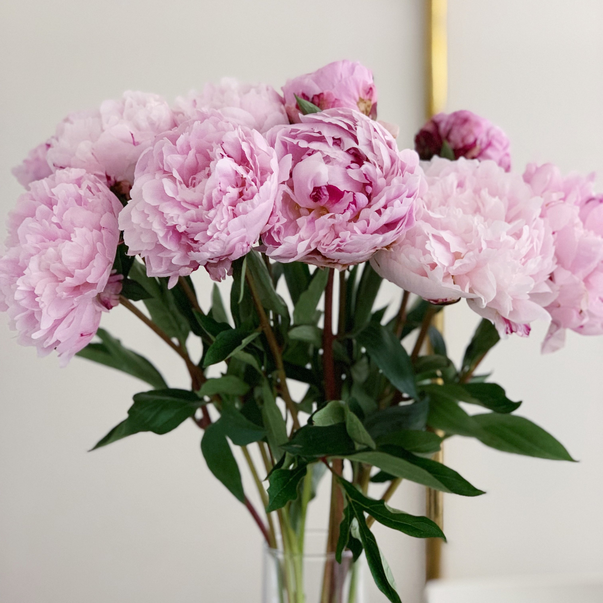

Fig.Peonies
The peony or paeony[2][3] is a flowering plant in the genus Paeonia, the only genus in the family Paeoniaceae. Peonies are native to Asia, Europe and Western North America.
Peonies are popular garden plants in temperate regions. Herbaceous peonies are also sold as cut flowers on a large scale, although generally only available in late spring and early summer.
The peony is named after Paeon (also spelled Paean), a student of Asclepius, the Greek god of medicine and healing. In Greek mythology, when Asclepius became jealous of his pupil, Zeus saved Paeon from the wrath of Asclepius by turning him into the peony flower.The genus Paeonia naturally occurs in the temperate and cold areas of the Northern Hemisphere. The section Moutan, which includes all woody species, is restricted in the wild to Central and Southern China, including Tibet.
Six types of flower are generally distinguished in cultivars of herbaceous peonies.
single: a single or double row of broad petals encircle fertile stamens, carpels visible.
Japanese: a single or double row of broad petals encircle somewhat broadened staminodes, may carry pollen along the edges, carpels visible.
Anemone: a single or double row of broad petals encircle narrow incurved petal-like staminodes; fertile stamens are absent, carpels visible.
Semi-double: a single or double row of broad petals encircles further broad petals intermingled with stamens.
bomb: a single row of broad petals encircles a shorter dense pompon of narrower petals.
double: the flower consists of many broad petals only, including those which likely are altered stamens and carpels.